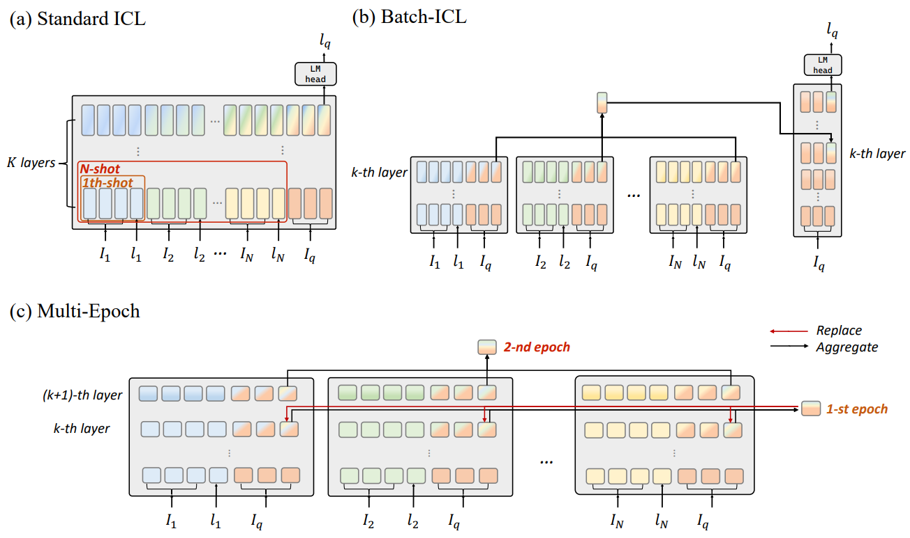

reading notes on paper Batch-ICL Effective, Efficient, and Order-Agnostic In-Context Learning by Zhang et al.
Abstract
In this paper, by treating in-context learning (ICL) as a meta-optimization process, we explain why LLMs are sensitive to the order of ICL examples. This understanding leads us to the development of Batch-ICL, an effective, efficient, and order-agnostic inference algorithm for ICL. Differing from the standard N-shot learning approach, Batch-ICL employs N separate 1-shot forward computations and aggregates the resulting meta-gradients. These aggregated meta-gradients are then applied to the forward computation of a zero-shot query to generate the final prediction. This batch processing approach renders the LLM agnostic to the order of ICL examples. Through extensive experiments and analysis, we demonstrate that Batch-ICL consistently outperforms most permutations of ICL examples. In some cases, it even exceeds the performance of the best order for standard ICL, all while reducing the computational resources required. Furthermore, we develop a novel variant of Batch-ICL featuring multiple “epochs” of meta-optimization. This variant implicitly explores permutations of ICL examples, further enhancing ICL performance.
Summary
This paper aims to resolve the order-instability problem in ICL. The basic idea is to treat each ICL example seperately and then aggregate the latent from each ICL in another Transformer layer. The main idea is from the prevelant view of ICL as a meta-optimization process.

My thoughts
This paper may be under review in ACL’24 or counterpart. Many papers from ACL or EMNLP seem to be not well-informed about the related work. It’s hard to scrasp the novelty of those papers when some (or even many) of the related work are not mentioned.
The explanation of the order-instability problem from the perspective of order-dependent meta-optimization process (approximate to GD of some linear model) seems promising. If the proposed algorithm is illustrated in the attention mask matarix, it may be more clearer. I think it is not fundamentally different from just using block-diagonal causal attention mask matrix for each example.
SGD is order dependent and the instability is from the variance of the gradient estimation from a single sample. Mini-batch will reduce the variance and improve the convergence rate of SGD. But they should behave similar at the end of the iteration under some mild conditions. More analysis on the convergence may be a more direct way of resolving the order-instability problem in ICL.
An important reference (I think) missing in the related work is the paper by Ding et al. [1] which has been accepted in ICLR’24. They say that CausalLM may not convergent to the desired solution for ICL (the stationary point is not optimal) while PrefixLM can converge to the least square solution stationary point. Therefore some fundamental limitations of CausalLM on ICL have already been discussed.
Moreover, the paper by Bhatia et al. [2] which is accepted by NeurIPS’23 seems to be a little similar to this paper except that they do the aggregation using a BERT with one single step instead of doing on \(K\) layers.
References
[1] N. Ding, T. Levinboim, J. Wu, S. Goodman, and R. Soricut, “CausalLM is not optimal for in-context learning.” arXiv, Sep. 02, 2023. Accessed: Nov. 22, 2023. [Online]. Available: http://arxiv.org/abs/2308.06912
[2] K. Bhatia, A. Narayan, C. De Sa, and C. Ré, “TART: A plug-and-play Transformer module for task-agnostic reasoning,” arXiv.org. Accessed: Jun. 20, 2023. [Online]. Available: https://arxiv.org/abs/2306.07536v1